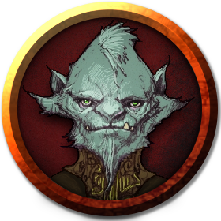

Esse massivo quaggoth fala fluentemente élfico urbano. Acontece que ele não é, de fato, um quaggoth, mas um príncipe dos elfos dourados transformado em um quaggoth por uma maldição. Ele clama ser o príncipe Derendil do reino de Nelrindenvane, na Floresta Alta. Sua coroa foi usurpada pelo maligno mago Terrestor, que o aprisionou nesta forma e o exilou de seu povo. Embora Derendil se comporte como o nobre príncipe que é, ele responde ao estresse – e particularmente às ameaças – como um quaggoth: violentamente arrancando membro por membro de seus inimigos e rasgando sua carne com dentes e garras afiadas. Ele volta a si somente após a batalha, ou quando alguém reforça sua “verdadeira identidade” para despertá-lo. Derendil lamenta que ele esteja lentamente, mas sem sombra de dúvidas, se perdendo para a selvageria de sua forma quaggoth.
Por tudo que passou em velkynvelve, Derendil sente no fundo seu coração, o desejo de esmagar Sarith da maneira mais brutal possível. Porém, este é seu lado Quaggoth falando, o elfo Derendil ainda segura seus instintos.
Derendil não tem conhecimento a respeito do que o mago Terrestor está fazendo com seu povo, então precisa retornar o quanto antes.
"Eu estive no topo da montanha, e agora no fundo do poço..."
"Ele me enche de elogios a todo momento. Eu o aceitaria como bobo da corte."
"Sua coragem é digna de nota. Eu aceitaria ele como um sargento no exército de ataque em Nelrindenvane."
"Uma pena que a pequena teve de partir. Seus esforços não serão esquecidos."
"Um príncipe reconhece um nobre quando vê um. Eu o tornaria um sargento no exército defensivo da Floresta Alta."
"Volta e meia ele tenta apostar meu reino. Acredito que este pobre tolo não tem ideia do que diz."
"Esse desmiolado deveria parar de caçar encrenca e entender que essa tribo dele foi extinta e ele vai ser o próximo se tocar um dedo em mim ou em alguns dos meus amigos."
"Sou grato a ele por ter nos ajudado a sair de Velkynvelve. Por isso, não ordenarei sua morte imediata quando retornar a Nelrindenvane. Sarith ficará preso em algum calabouço pela eternidade."
"Este querido será bem vindo sempre que quiser, no reino dos elfos dourados."
"Morte rápida e justa a ambos. Não possuem a classe necessária para irem a Nelrindenvane."
"Sua sabedoria seria bem vinda no Conselho de Nelrindenvane."